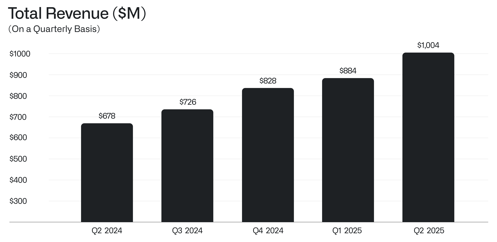
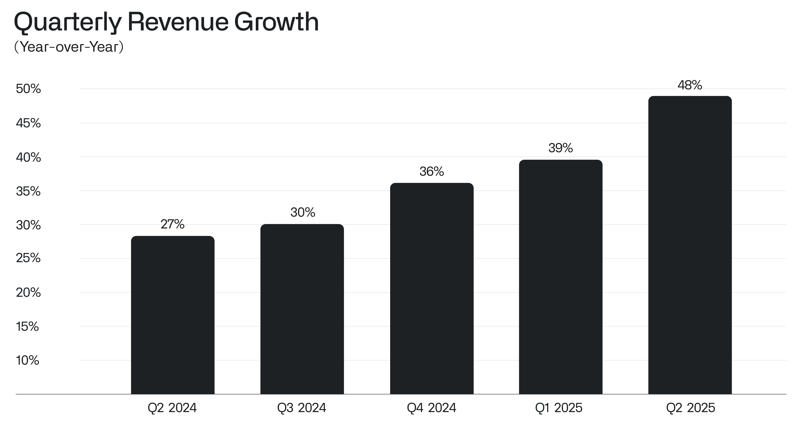
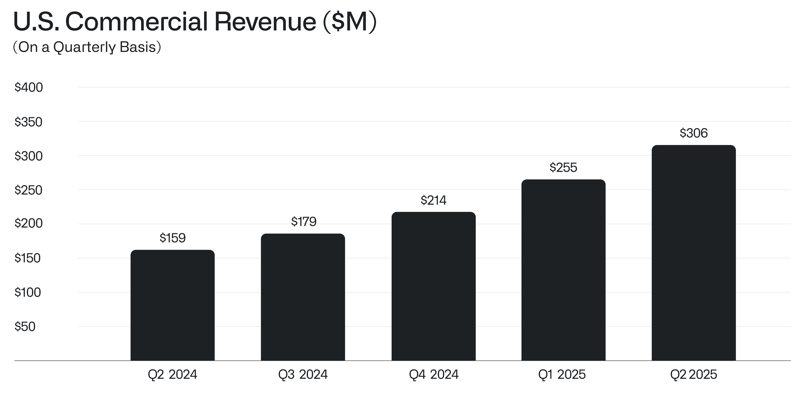
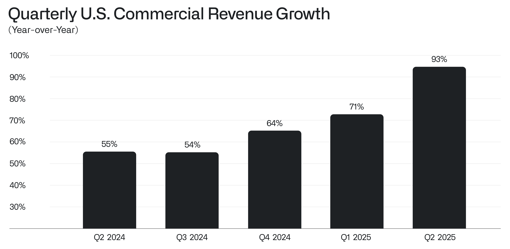

Letter to Shareholders
August 4, 2025
"All the value in the market is going to go to chips and what we call ontology." - Alexander C. Karp, June 6, 2024
I.
This is still only the beginning of something much larger and, we believe, even more significant. Our overall business generated more than $1 billion in revenue for the second quarter of the year, a stunning 48% increase over the same period the year before, as we reach an annual run rate of more than four billion dollars.

The growth rate of our business has accelerated radically, after years of investment on our part and derision by some. The skeptics are admittedly fewer now, having been defanged and bent into a kind of submission. Yet we see no reason to pause, to relent, here.
It has been a steep and upward climb—an ascent that is a reflection of the remarkable confluence of the arrival of language models, the chips necessary to power them, and our software infrastructure, one that allows organizations to tether the power of artificial intelligence to objects and relationships in the real world.

And our U.S. commercial business—the emerging core of Palantir and the seed of what an entire industry will become, perhaps the world’s most dominant, in the years to come—nearly doubled in twelve months, generating $306 million in revenue last quarter, representing a 93% increase from $159 million the year before.

For a startup, even one only a thousandth of our size, this growth rate would be striking, the talk of the town. For a business of our scale, however, it is, we continue to believe, nearly without precedent or comparison. The software industry for years was judged by what many called the Rule of 40—the view that the sum of the rate of growth in the revenue generated by a compelling software firm plus its profit margin should be greater than 40%. Ours is now 94%.

With continued execution, and a focus on what matters and a near complete disinterest in what does not, we believe that Palantir will become the dominant software company of the future.
And the market is now waking up to this reality.
II.
The reasons for our increasingly precipitous rise are many.
But principal among them is our willingness to foster an unapologetically specific culture within this artist colony of a company—to allow for plenty of friction and disagreement across a range of domains yet remain unwaveringly committed to a set of values and an approach to building.
It is this culture that gave rise to the Ontology, Forward Deployed Engineers, Foundry, and Maven Smart System—all of which have already changed the course of human history. Terms and titles that we casually coined decades ago are now widespread; some have even been adopted by companies which seek to mimic our impact and ascent.
Similarly, in the United States, the most consequential country in the West, it is the culture that enables companies like ours to come into existence—and excel. It must be protected.
The United States is not, and should not be permitted to become, a soft compromise and amalgam of global values and tastes.
A reticence or perhaps incapacity to pronounce and to prefer, beyond the shallow and ritualistic shaming of others in the public sphere that masquerades as thought, has had costs.
A fuller statement of the causes and consequences of this reticence is set forth in The Technological Republic. In short, however, a tolerance of everything, a shallow embrace of all views and perspectives as equally valid, often and unfortunately devolves into a belief in nothing.
In The Abolition of Man, published in 1943, C.S. Lewis warned us of “men without chests,” those who were never permitted an opportunity to develop an interior life of sentiment and emotion, of some devotion, indeed, and attachment to the inexplicable and perhaps indefensible.
“For every one pupil who needs to be guarded from a weak excess of sensibility,” Lewis wrote, “there are three who need to be awakened from the slumber of cold vulgarity.”
Such men without chests promise to shepherd us forward yet lack much substance and content, even a flicker of an animating worldview or belief structure, other than their own self-preservation and advancement.
They are little more than administrative caretakers, who have been taught to fear belief and sentiment; some claim to be part of a struggle, but their identity is often merely oppositional.
In the end, they are hollow and stand at a lonely distance from the world.
Sincerely,

Alexander C. Karp
Chief Executive Officer & Co-Founder
Palantir Technologies Inc.
Forward-Looking Statements
This letter contains “forward-looking statements” within the meaning of the “safe harbor” provisions of the Private Securities Litigation Reform Act of 1995, including, but not limited to, statements regarding our financial outlook, product development and related timing, distribution, and pricing, expected benefits of and applications for our software platforms, business strategy, and plans (including strategy and plans relating to our Artificial Intelligence Platform (“AIP”), sales and marketing efforts, sales force, partnerships, and customers), investments in our business, market trends and market size, opportunities (including growth opportunities), our expectations regarding our existing and potential investments in, and commercial contracts with, various entities, our expectations regarding macroeconomic events, our expectations regarding our share repurchase program, and positioning. These forward-looking statements are made as of the date they were first issued and were based on current expectations, estimates, forecasts, and projections as well as the beliefs and assumptions of management. Words such as “guidance,” “expect,” “anticipate,” “should,” “believe,” “hope,” “target,” “project,” “plan,” “goals,” “estimate,” “potential,” “predict,” “may,” “will,” “might,” “could,” “intend,” “shall,” and variations of these terms or the negative of these terms and similar expressions are intended to identify these forward-looking statements. Forward-looking statements are subject to a number of risks and uncertainties, many of which involve factors or circumstances that are beyond our control. Our actual results could differ materially from those stated or implied in forward-looking statements due to a number of factors, including but not limited to risks detailed in our filings with the Securities and Exchange Commission (the “SEC”), including in our annual report on Form 10-K for the fiscal year ended December 31, 2024 and other filings and reports that we may file from time to time with the SEC, including our current report on Form 8-K furnishing our earnings press release for the fiscal quarter ended June 30, 2025 and our quarterly report on Form 10-Q for the fiscal quarter ended June 30, 2025. In particular, the following factors, among others, could cause our results to differ materially from those expressed or implied by such forward-looking statements: our ability to successfully execute our business and growth strategy; the sufficiency of our available funds to meet our liquidity needs; the demand for our platforms, product offerings, and services in general; our ability to increase our number of new customers and revenue generated from customers; our ability to realize some or all of the total contract value of customer contracts as revenue, including any contractual options available to customers or contractual periods that are subject to termination for convenience provisions; our long and unpredictable sales cycle; our ability to successfully execute our channel sales and other strategic initiatives with third parties; our ability to retain and expand our customer base; the fluctuation of our results of operations and our key business measures on a quarterly basis in future periods; the seasonality of our business; the implementation process for our platforms, which may be complex and lengthy; our ability to successfully develop and deploy new technologies to address the needs of our existing or prospective customers; our ability to make our platforms and product offerings easier to install, consume, and use; our ability to maintain and enhance our brand and reputation; our ability to maintain and enhance our culture as our business grows and as we pursue our business and financial goals; news or social media coverage about us or our leadership, including but not limited to coverage that presents, enhances, or relies on, inaccurate, misleading, incomplete, or otherwise damaging information, misconceptions, or falsehoods; the impact of recent or future global macroeconomic and geopolitical events, such as the ongoing Russia-Ukraine, and Israel and broader Middle East conflicts, heightened interest rates, monetary policy changes, foreign currency fluctuations, or the potential or actual imposition of tariffs or other impacts on trade relations on the business and operations of our company or of our existing or prospective customers and partners; issues raised by the use of artificial intelligence in our platforms; and any breach or access to our or customer or third-party data.
The forward-looking statements included in this letter represent our views as of the date of this letter. We anticipate that subsequent events and developments will cause our views to change. We undertake no intention or obligation to update or revise any forward-looking statements, whether as a result of new information, future events or otherwise. These forward-looking statements should not be relied upon as representing our views as of any date subsequent to the date of this letter. Past performance is not necessarily indicative of future results.
Other Notes
This letter may contain certain non-GAAP financial measures. Our definitions may differ from the definitions used by other companies and therefore comparability may be limited. In addition, other companies may not publish these or similar metrics. Further, these metrics have certain limitations in that they do not include the impact of certain expenses that are reflected in our consolidated statements of operations. Thus, these non-GAAP financial measures should be considered in addition to, not as a substitute for, or in isolation from, measures prepared in accordance with GAAP. We compensate for these limitations by providing reconciliations of these non-GAAP financial measures to the most comparable GAAP measures, which can be found in our investor presentation and/or earnings release, which are available on our investor relations website (investors.palantir.com). We encourage investors and others to review our business, results of operations, and financial information in its entirety, not to rely on any single financial measure, and to view these non-GAAP financial measures in conjunction with the most directly comparable GAAP financial measures.
This letter may contain statistical data, estimates, forecasts, and statements that are based on independent industry publications or other publicly available information, as well as other information based on our internal sources. This information involves many assumptions and limitations, and you are cautioned not to give undue weight to these estimates. We have not independently verified the accuracy or completeness of the data contained in these industry publications and other publicly available information. Accordingly, we make no representations as to the accuracy or completeness of that data nor do we undertake to update such data after the date of this letter. This letter may refer to various growth rates when discussing our business. These rates reflect year-over-year comparisons unless otherwise stated.
By receiving this letter, you acknowledge that you will be solely responsible for your own assessment of the market and our market position and that you will conduct your own analysis and be solely responsible for forming your own view of the information provided, including regarding the potential future performance of our business.